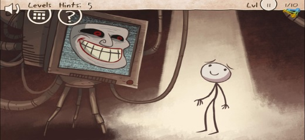
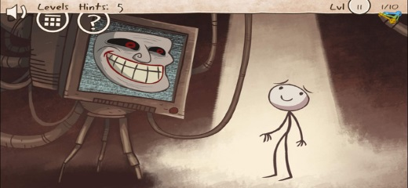
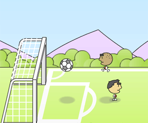
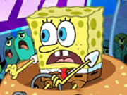
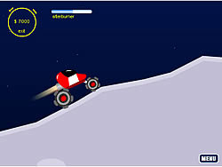

Games 4U
Passatempos divertidos!
SITE DE JOGOS
feito por Lucas de Medeiros e Moisés Oliveira
 


RESPONDA: QUAIS OS MELHORES JOGOS DO SITE?
Por que jogar faz bem?
O cérebro humano também é um músculo, e, assim como os demais músculos do corpo, necessita de exercícios para manter a forma, e não acabar ficando "obsoleto" ou "enferrujado".
Saiba que um ótimo exercício para a mente é jogar games!
"Ah, mas por que jogos seriam bons para a saúde do meu cérebro?"
Os jogos de videogame estimulam a atividade cerebral, melhorando a sua memória, seus reflexos, capacidade de raciocínio e até mesmo a tomar decisões importantes. Quando jogamos, o nosso cérebro é estimulado a pensar de forma mais prazerosa.
Reprodução: Canal Tech
Homem jogando Video Game
Algumas vantagens são:
- Os jogos aliviam o stress e ajudam na visão;
- Ajudam na constituição do caráter, e não, jogos violentos não influenciam nas atitudes de uma pessoa;
- É possível até perder peso jogando, já que pode acabar sendo um estímulo para outros exercícios;
- Comece a jogar neste site mesmo!
Mas, sem excessos! Tudo que é feito de forma excessiva, acaba por prejudicar o ser humano.
Fonte: Canal Tech
Tabela dos jogos do site
| Jogo | Gênero | Descrição | Imagem |
|---|---|---|---|
| 1 on 1 Soccer | Esportes | Partidas de futebol simples e divertidas entre seleções. |  |
| 1 on 1 Soccer Brasil | Esportes | É plena Copa do Mundo de 2014, realizada no Brasil! Dispute esse torneio, desafiando as seleções e desbloqueando jogadores a cada vitória! |  |
| Bob Esponja Delivery Dilemma | Plataforma | O Sr. Sirigueijo pede ao Bob Esponja para que traga os ingredientes do hambúrguer de siri. Ajude o Bob Esponja a entregar todos os ingredientes ao restaurante antes que o tempo termine e sem bater muito o veículo, desviando de diversos outros carros no trânsito e acelerando sempre que possível para chegar rapidamente. |  |
| Feudalism | RPG | Torne-se o grande imperador de uma terra que terá de ser dominada por sua força. Neste jogo, torne-se um mestre da arte da guerra! |  |
| Haunt the House | Aventura | Ajude esta entidade fantasmagórica e fofa (!) a assustar todos os invasores da casa, tomando cuidado para não fazê-los pular pela janela de tanto medo! |  |
| Incursion 1 | Tower Defense | Incursion é um jogo de estratégia, onde o reino da luz foi coberto pela escuridão, e a sua missão é defendê-lo contra os soldados inimigos. Você tem que treinar seus defensores e colocá-los em locais estratégicos ao longo da estrada para parar os ataques inimigos. |  |
| Incursion 2 | Tower Defense | A legião das trevas continua seu ataque massivo sem dar trégua e, neste tempo difícil, um herói surgiu para liderar à todos. Defenda sua base com valentia e submeta as forças inimigas à derrota! |  |
| Planet Racers | Corrida | Corra, equipe, ganhe! Torne-se o novo rei do universo de Planet Racers desafiando outros corredores e ganhando reputação e dinheiro suficientes para desafiar o atual rei. |  |
| Trollface Quest | Comédia/Puzzle | Será que você consegue cumprir os desafios? ( ͡° ͜ʖ ͡°) |  |
Para acessar cada um desses jogos, basta ir no menu!
RESPONDA: QUAIS OS MELHORES JOGOS DO SITE?
História dos jogos eletrônicos
Os jogos, hoje em dia desempenham um papel essencial de descontração na vida corrida de algumas pessoas, comumente estressadas por uma rotina desgastante.
A história dos jogos se inicia com uma criação engraçada de entreterimento, sem muito enfoque na época, criado em 1958 por um físico chamado William Higibotham, que entediado na base militar em que estava trabalhando, criou com um osciloscópio e um computador analógico o pequeno jogo que batizou de Tenis for Two, em português Tênis para Dois.
Reprodução: Gaveta de Bagunças
Pessoas jogando Tenis Two
Mal imaginaria esse físico que sua invenção inspiraria um mundo de expansão de imaginação que junto à tecnologia pôde tornar possível a criação de um novo conceito de diversão e até mesmo de trabalho para o mundo, a criação dos games.
Os games só tiveram a evoluir com contribuições de cientistas que decidiram investir nessa área da tecnologia que se revelou promissora principalmente nos dias atuais com o grande aumento tanto de jogadores como de valorização do mercado de trabalho de profissionais aptos. Hoje as chances de ganhar dinheiro e reconhecimento nesse meio são muito possíveis principalmente para quem acompanha e gosta do meio e pretende se profissionalizar na área.
Fonte: Gaveta de Bagunças
Nossos Jogos:
Últimas postagens:
Copyright © Games 4U - 2015